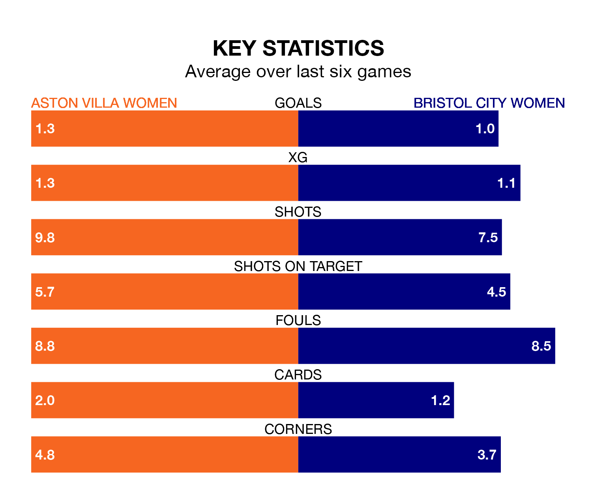

Bristol City Women come to the Poundland Bescot Stadium to play Aston Villa Women on Saturday lunchtime in terrible form, having collected just two points from their last six games.
The visitors have drawn two and lost four of their last six fixtures, while the Villa have three wins and three losses.
Bristol City are bottom of the table after 12 games, of which they have won one and drawn two, earning five points.
Aston Villa are four places ahead of the Robins in eighth, with four wins and eight losses putting them on 12 points.
In the last 10 years, Aston Villa and Bristol City have played each other on nine occasions. Aston Villa won two of them, Bristol City five, and they drew twice.
On average, the Villa scored 1.6 goals and the Robins 2.1 in those matches.
Their last meeting was on November 12, when Aston Villa won 2-0 away.
With 13 goals in 12 games so far this season, the away side are scoring at below the league average rate with 1.1 goals per game. And they are conceding more than average, letting in 31 goals at a rate of 2.6 per game.
The Villa are also below average scorers, with 1.2 goals per game, compared to a league average of 1.7. They have conceded 2.0 goals per game.
Aston Villa's last match was on Sunday, a 2-1 loss against Manchester United Women, with Rachel Daly getting the goal for the Villa.
Bristol City lost 2-1 against West Ham United Women last time out, also on Sunday, with Amalie Grønbak Thestrup on the scoresheet.
Updated: 13:20 (UTC), 29/01/24